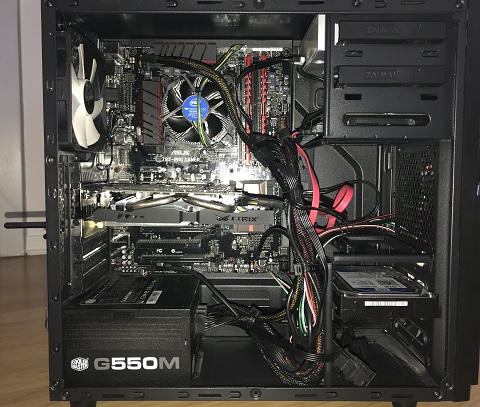
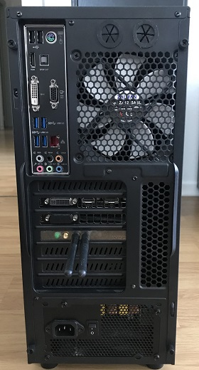
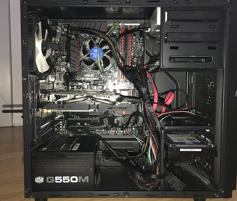
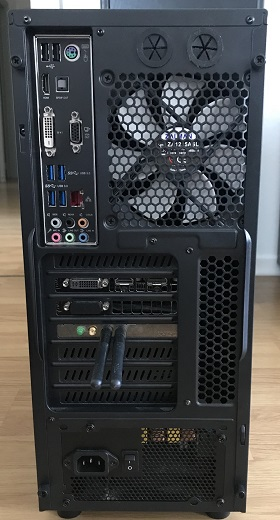

Bienvenue à vous qui prenez le temps de lire ces quelques lignes.
Je me présente Cindy, Wonder Woman de ma petite vie de 31ans.
Pour me décrire en quelques lignes je suis une jeune maman d’une Princesse de 18 mois, conjointe d’un grand enfant de 37ans, une passionnée de Pop Culture (une geek oui), passionnée de Culture Nipponne, de littérature et bien entendu d’informatique.
Je suis une jeune femme pleine de bonne volonté et ayant une vie professionnelle déjà bien remplie.
J’ai eu l’immense plaisir de travailler une année en tant qu’adjointe du patrimoine à la bibliothèque Grand’ Rue de Mulhouse. Malheureusement je n’ai pu poursuivre cette vocation pour diverses raisons.
Etant une Wonder Woman toujours très active j’ai continué à travailler dans de nombreux domaines pour subvenir à mes besoins.
Grâce à ces différentes expériences j’ai eu la chance de rencontrer des personnes formidables mais aussi d’apprendre de nouvelles compétences et de perfectionner celles innées.
Outre ces aspects positifs, ces emplois étaient malheureusement que des emplois alimentaires, mon épanouissement était loin d’être total.
C’est pourquoi à la naissance de ma fille, profitant pleinement de mon tout nouveau statut de maman j’ai souhaité me réorienter professionnellement durant ce congé maternité.
Mon but étant d’apprécier ma nouvelle vie sur tous ses aspects.
C’est ainsi que débute mon plan de conquête du monde (informatique pour le moment).
Je souhaite aujourd’hui retrouver le plaisir d’aller travailler dans un milieu passionnant, intellectuellement stimulant et qui me permette d’exercer pleinement mes compétences humaines et techniques.
Je souhaite être une personne épanouie pour le bien être de ma petite famille et pour que ma Princesse soit fière de sa maman.
C’est pourquoi je me trouve aujourd’hui en compagnie de mes collègues 4(x3) FantasTIC prête à absorber, telle une éponge la moindre connaissance qui puisse mener à bien mon plan de conquête du monde (informatique).

Bonjour à toutes et à tous, j'espère que vous serez indulgents et vous apprécierez mon travail
« Le succès n’est pas la clé du bonheur. Le bonheur est la clé du succès. Si vous aimez ce que vous faites, vous réussirez. » Albert Schweitzer

 


